plotMeanDiff.RdConstruct an MA (mean-difference) plot
plotMeanDiff(
res,
meanCol = NULL,
logFCCol = NULL,
pvalCol = NULL,
padjCol = NULL,
padjThreshold = 0.05,
pointSize = "small",
interactivePlot = FALSE,
nTopToLabel = 0
)data.frame (typically output from
calculateRelativeFC()) with columns corresponding to the
average abundance (logCPM or AveExpr), log-fold
change (logFC) and significance (FDR or
adj.P.Val).
Character scalars indicating the
columns from res that will be used to represent the
mean value (x-axis), logFC (y-axis), nominal p-value (used to find
the top features to label) and adjusted p-value (used
for coloring). If NULL (default), pre-specified values
will be used depending on the available columns
("logCPM" or "AveExpr", "logFC",
"PValue" or "P.Value", and
"FDR" or "adj.P.Val", respectively).
Numeric scalar indicating the adjusted p-value threshold to use for coloring the points. All features with adjusted p-value below the treshold will be shown in red.
Either "small" or "large", indicating
which of the two available plot styles that will be used.
Logical scalar, indicating whether an interactive plot should be returned, in which one can hover over the individual points and obtain further information.
Numeric scalar, indicating the number of points that
should be labeled in the plot. The points will be ranked by the
pvalCol column, and the top nTopToLabel values will
be labeled by the corresponding row names. Only used if
interactivePlot is FALSE.
If interactivePlot is TRUE, a plotly
object. If interactivePlot is FALSE, a ggplot2
object.
se <- readRDS(system.file("extdata", "GSE102901_cis_se.rds",
package = "mutscan"))[1:200, ]
design <- model.matrix(~ Replicate + Condition,
data = SummarizedExperiment::colData(se))
res <- calculateRelativeFC(se, design, coef = "Conditioncis_output")
plotMeanDiff(res, pointSize = "large", nTopToLabel = 3)
